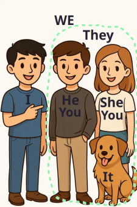

Pronouns (Personal, Demonstrative)
Personal pronouns (личные местоимения) имеют два падежа — именительный и косвенный.
Личные местоимения в именительном падеже:
Именительный падеж (nominative case) — это форма местоимения, которая используется, когда местоимение является подлежащим (субъектом) предложения.
| Личные местоимения в именительном падеже | I | he | she | it | we | you | they |
|---|---|---|---|---|---|---|---|
| Я | он | она | оно | мы | вы | они |

Examples:
- I am a boy — Я мальчик.
- He is a doctor — Он врач.
- She is a teacher — Она учительница.
- It is big — Оно большое.
- We are children — Мы дети.
- You are kind — Ты добрый.
- They are clever — Они умные.
Exercise: Fast carousel (nominative case)
Личные местоимения в косвенном падеже
Косвенный падеж (oblique case) — это форма местоимения, которая используется, когда местоимение является дополнением в предложении (то есть объектом действия).
Косвенный падеж местоимений в английском языке отвечает на вопросы "кому?" (to whom?), "чему?" (to what?), "с кем?" (with whom?), "с чем?" (with what?) и аналогичные.
| Личные местоимения в косвенном падеже | me | him | her | it | us | you | them |
|---|---|---|---|---|---|---|---|
| меня, мне, мною | его, ему, него, им, нему | ее, ей, нее, ней, нею | его, ей, им и др. | нас, нам, нами | тебя, тебе, вами | их, им, ими, них, ним |

Examples:
- He sees me — Он видит меня.
- Give them the books — Дайте им книги.
- Tell him — Скажите ему.
- I give her a notebook — Я даю ей тетрадь.
- I look at him — Я смотрю на него.
- I see you — Я вижу тебя.
- Tell me — Скажи мне.
- Take it — Возьми это.
- Let me take an apple — Позвольте мне взять яблоко.
- Give them a lamp — Дай им лампу.
- Give us the boxes — Дайте нам коробки.
- Put them on the table — Положи их на стол.
- He sees me — Он меня.
- Tell us — Скажите нам.
- Tell them — Скажите им.
- Tell her — Скажите ей.
- Tell him — Скажите ему.
- Find it — Найдите его.
- Find it (the book) — Найдите ее (книгу).
- Find her (student) — Найдите ее (студентку).
- Find them — Найдите их.
- I see them — Я вижу их.
- They see me — Они видят меня.
- We see him — Мы видим его.
- He sees her — Он видит ее.
- You see us — Вы видите нас.
- She sees you — Она видит вас.
- Look at her — Посмотри на нее.
- She looks at us — Она смотрит на нас.
- Roberto knows the answer. Ask him — Роберто знает ответ. Спроси его.
- The boys are in the garden. Please give the sweets to them — Мальчики в саду. Пожалуйста, отдайте сладости им.
- Do you want to help us? We are baking pies today. — Вы хотите помочь нам? Сегодня мы печем пироги.
Exercise: listen and write (oblique case)
Demonstrative pronouns (Указательные местоимения):
Указательные местоимения в английском языке используются для указания на конкретные предметы или людей.
| Указательные местоимения | this (/ðɪs/) | that (/ðæt/) | these (/ðiːz/) | those (/ðoʊz/) |
|---|---|---|---|---|
| этот, эта, это | тот, та, то | эти | те |
- This (/ðɪs/) — этот, эта, это (для указания на один предмет, находящийся близко к говорящему).
- These (/ðiːz/) — эти (для указания на несколько предметов, находящихся близко к говорящему).
- That (/ðæt/) — тот, та, то (для указания на один предмет, находящийся дальше от говорящего).
- Those (/ðoʊz/) — те (для указания на несколько предметов, находящихся дальше от говорящего).
звук ð - что бы произнести, следует язык разместить между зубами и произнести звук 'з' Но слышится как мягкая 'Д'

Examples:
- This is my book. — Это моя книга (близко).
- This good book — эта хорошая книга.
- That is your car. — То твоя машина (далеко).
- That white apple — это белое яблоко.
- These are my friends. — Это мои друзья (близко).
- These words — эти слова.
- These good books — эти хорошие книги.
- Those seas — те моря
- Those are your keys. — Те твои ключи (далеко).
- Those white apples — те белые яблоки.
- That sea — то море.
- This word — это слово.
This [ðɪs] (эта/это)
Мы говорим this - речь об одном предмете или о живом существе, которое находится возле нас.
This pencil is black. — Этот карандаш черный.
These [ðiːz] (эти)
Мы говорим these - речь о множестве предметов или живых существ, которые находятся возле нас.
These books are interesting. — Эти книги интересные.
That [ðæt] (та/тот)
Мы говорим that - речь об одном предмете или о живом существе, которое находится далеко от нас.
That pencil is blue. — Тот карандаш голубой.
Those [ðəʊz] (те)
Мы говорим those - речь о множестве предметов или живых существ, которое находится далеко от нас.
Those cats are white. — Те коты белые.
Exercise: listen and write (demonstrative pronouns)
Указательные предложения: This is ..., These are ..., That is ..., Those are ...
Вопросы "Что это?".
Для вопроса в ед. числе What is this/it? и мн. числе What are these? ответы This is... и These/They are...
- What is this? — This is a doll. (Что это? — Это кукла.)
- What are these? — These are houses. (Что это? — Это дома.)
- What is this? — This/It is a train. (Что это? — Это поезд.)
- What are these? — These/They are toys. (Что это? — Это игрушки.)
Вопросы "Что то?".
Для вопроса в ед. числе What is that? и мн. числе What are those? ответы That is... и Those/They are...
- What is that? — That/It is a book. (Что то? — То книга.)
- What are those? — Those/They are shoes. (Что то? — То туфли.)
- What is that? — That is a car./It is a car. (Что то? — То машина.)
- What are those? — Those are trees./They are trees. (Что то? — То деревья.)
Артикль не нужен
Когда перед существительным ("book") стоит указательное местоимение ("this" — этот, эта), артикль не нужен, потому что "this" уже выполняет функцию определения конкретного объекта.
Пример:
- "This is a book." → правильная форма в предложении, потому что здесь артикль "a" указывает на неопределенный объект.
- "This book is interesting." → правильно, здесь артикль не нужен, потому что "this" уже делает существительное определенным.
Примеры:
I have a family. — У меня есть семья.
You have time. — У тебя есть время.
He has a house. — У него есть дом.
She has a mother. — У нее есть мама.
It is a big city. — Это большой город.
We have a problem. — У нас есть проблема.
They have money. — У них есть деньги.
I see a child. — Я вижу ребенка.
You know this man. — Ты знаешь этого мужчину.
He goes to school. — Он ходит в школу.
She takes the water. — Она берет воду.
It works every day. — Это работает каждый день.
We think about life. — Мы думаем о жизни.
They want a new car. — Они хотят новую машину.
I need my room. — Мне нужна моя комната.
You use your hand. — Ты используешь свою руку.
He makes a thing. — Он делает вещь.
She finds her group. — Она находит свою группу.
We come this week. — Мы приходим на этой неделе.
I do not know the number. — Я не знаю номер.
You do not see the question. — Ты не видишь вопрос.
He does not have work. — У него нет работы.
She does not want this thing. — Она не хочет эту вещь.
It does not work at night. — Это не работает ночью.
We do not need money. — Нам не нужны деньги.
They do not go to that place. — Они не ходят в то место.
I do not like this city. — Мне не нравится этот город.
You do not take the water. — Ты не берешь воду.
He does not tell his name. — Он не говорит свое имя.
She does not find her mother. — Она не находит свою маму.
It does not look good. — Это не выглядит хорошо.
We do not use this room. — Мы не используем эту комнату.
They do not come today. — Они не приходят сегодня.
I do not think about it. — Я не думаю об этом.
Do I have time? — У меня есть время?
Do you know this woman? — Ты знаешь эту женщину?
Does he see the child? — Он видит ребенка?
Does she want water? — Она хочет воды?
Does it work? — Это работает?
Do we need this thing? — Нам нужна эта вещь?
Do they have a house? — У них есть дом?
What do you see? — Что ты видишь?
Where does he go? — Куда он идет?
When do they come? — Когда они приходят?
Why does she need money? — Почему ей нужны деньги?
Who do you know in this city? — Кого ты знаешь в этом городе?
How do you find the place? — Как ты находишь место?
What does he want? — Что он хочет?
When do we use this? — Когда мы используем это?
I see you every day. — Я вижу тебя каждый день.
She knows him very well. — Она знает его очень хорошо.
We help her with work. — Мы помогаем ей с работой.
They need it for the house. — Это нужно им для дома.
My mother loves us. — Моя мама любит нас.
The teacher asks them questions. — Учитель задает им вопросы.
This thing interests me. — Эта вещь интересует меня.
He gives you the money. — Он дает тебе деньги.
I call him every week. — Я звоню ему каждую неделю.
She waits for her at school. — Она ждет ее в школе.
We use it every night. — Мы используем это каждую ночь.
They invite us to their city. — Они приглашают нас в свой город.
The child follows them. — Ребенок следует за ними.
He understands me. — Он понимает меня.
I don't know you. — Я не знаю тебя.
She doesn't see him today. — Она не видит его сегодня.
We don't need it. — Это нам не нужно.
They don't help us. — Они не помогают нам.
He doesn't tell them about the problem. — Он не рассказывает им о проблеме.
My mother doesn't understand me. — Моя мама не понимает меня.
You don't call her. — Ты не звонишь ей.
The student doesn't hear us. — Студент не слышит нас.
She doesn't wait for you. — Она не ждет тебя.
We don't invite him. — Мы не приглашаем его.
They don't know her. — Они не знают ее.
He doesn't help me. — Он не помогает мне.
You don't need us. — Мы тебе не нужны.
Do you know me? — Ты знаешь меня?
Does she see him? — Она видит его?
Do they need us? — Мы им нужны?
Does he help you? — Он помогает тебе?
Do you understand me? — Ты понимаешь меня?
What does he tell you? — Что он рассказывает тебе?
When do they call us? — Когда они звонят нам?
Why does she need it? — Почему это нужно ей?
Where do you see them? — Где ты видишь их?
Who helps her? — Кто помогает ей?
How do you know him? — Как ты знаешь его?
What do they want from me? — Что они хотят от меня?
When does he visit you? — Когда он навещает тебя?
Why do you need them? — Почему они тебе нужны?
Where does she wait for us? — Где она ждет нас?
Do you hear me? — Ты слышишь меня?
Do they understand him? — Они понимают его?
Does she love you? — Она любит тебя?
Do you believe them? — Ты веришь им?
This is my family. — Это моя семья.
That is your house. — То твой дом.
These are good people. — Это хорошие люди.
Those are students. — Те студенты.
This is a big city. — Это большой город.
That is a small room. — То маленькая комната.
These are my hands. — Это мои руки.
Those are their children. — Те их дети.
This is clean water. — Это чистая вода.
That is an interesting question. — То интересный вопрос.
This thing is on the table. — Эта вещь на столе.
That woman is my mother. — Та женщина — моя мама.
These groups are in the school. — Эти группы в школе.
Those things are in that place. — Те вещи в том месте.
This money is for you. — Эти деньги для тебя.
This is not my mother. — Это не моя мама.
That is not your time. — То не твое время.
These are not my things. — Это не мои вещи.
Those are not students. — Те не студенты.
This is not a problem. — Это не проблема.
That is not good work. — То не хорошая работа.
These are not our rooms. — Это не наши комнаты.
Those are not my friends. — Те не мои друзья.
This is not your number. — Это не твой номер.
That is not the right place. — То не правильное место.
This thing is not for you. — Эта вещь не для тебя.
That man is not a teacher. — Тот мужчина не учитель.
These people are not from my country. — Эти люди не из моей страны.
Those questions are not difficult. — Те вопросы не сложные.
This water is not cold. — Эта вода не холодная.
Is this your school? — Это твоя школа?
Is that your child? — То твой ребенок?
Are these your friends? — Это твои друзья?
Are those students? — Те студенты?
What is this? — Что это?
What is that? — Что то?
Who is that man? — Кто тот мужчина?
Who is this woman? — Кто эта женщина?
Where is this place? — Где это место?
Why is that a problem? — Почему то проблема?
Is this your house? — Это твой дом?
Is that your family? — То твоя семья?
Are these your things? — Это твои вещи?
Are those their children? — Те их дети?
What are these things? — Что это за вещи?
What are those? — Что те?
Where are these people from? — Откуда эти люди?
Why are these questions difficult? — Почему эти вопросы сложные?
Is this water clean? — Эта вода чистая?
Is that your work? — То твоя работа?
This spoon is new. – Эта ложка новая.
The spoon isn't here. – Ложки нет здесь.
Is it a big spoon? – Это большая ложка?
They are metal spoons. – Они (эти) металлические ложки.
I'm not using this spoon. – Я не использую эту ложку.
That is my fork. – То (вон там) моя вилка.
These forks aren't clean. – Эти вилки не чистые.
Are they sharp forks? – Они (эти) острые вилки?
I am looking for a fork. – Я ищу вилку.
Is the fork on the table? – Вилка на столе?
These are small plates. – Это маленькие тарелки.
The plate isn't hot. – Тарелка не горячая.
Is this your plate? – Это твоя тарелка?
It is a blue plate. – Это синяя тарелка.
We are not washing the plates now. – Мы не моем тарелки сейчас.
That is a big mirror. – То (вон то) большое зеркало.
The mirror isn't on the wall. – Зеркала нет на стене.
Is the mirror broken? – Зеркало разбито?
I am looking in the mirror. – Я смотрюсь в зеркало.
These are not my mirrors. – Это не мои зеркала.
What is this? This is a pen. — Что это? — Это ручка.
What is this? It is a pen. — Что это? — Это ручка.
What is this? This is a phone. — Что это? — Это телефон.
What is this? It is a phone. — Что это? — Это телефон.
What is this? This is a chair. — Что это? — Это стул.
What is this? It is a chair. — Что это? — Это стул.
What is this? This is a clock. — Что это? — Это часы.
What is this? It is a clock. — Что это? — Это часы.
What is this? This is an apple. — Что это? — Это яблоко.
What is this? It is an apple. — Что это? — Это яблоко.
What is this? This is a cat. — Что это? — Это кот.
What is this? It is a cat. — Что это? — Это кот.
What is this? This is a ball. — Что это? — Это мяч.
What is this? It is a ball. — Что это? — Это мяч.
What is this? This is a cup. — Что это? — Это чашка.
What is this? It is a cup. — Что это? — Это чашка.
What is this? This is a shoe. — Что это? — Это туфля.
What is this? It is a shoe. — Что это? — Это туфля.
What is this? This is a bird. — Что это? — Это птица.
What is this? It is a bird. — Что это? — Это птица.
What are these? These are pens. — Что это? — Это ручки.
What are these? They are pens. — Что это? — Это ручки.
What are these? These are apples. — Что это? — Это яблоки.
What are these? They are apples. — Что это? — Это яблоки.
What are these? These are chairs. — Что это? — Это стулья.
What are these? They are chairs. — Что это? — Это стулья.
What are these? These are books. — Что это? — Это книги.
What are these? They are books. — Что это? — Это книги.
What are these? These are children. — Что это? — Это дети.
What are these? They are children. — Что это? — Это дети.
What are these? These are cats. — Что это? — Это коты.
What are these? They are cats. — Что это? — Это коты.
What are these? These are balls. — Что это? — Это мячи.
What are these? They are balls. — Что это? — Это мячи.
What are these? These are cups. — Что это? — Это чашки.
What are these? They are cups. — Что это? — Это чашки.
What are these? These are shoes. — Что это? — Это туфли.
What are these? They are shoes. — Что это? — Это туфли.
What are these? These are birds. — Что это? — Это птицы.
What are these? They are birds. — Что это? — Это птицы.
What is that? That is a table. — Что то? — То стол.
What is that? It is a table. — Что то? — То стол.
What is that? That is a dog. — Что то? — То собака.
What is that? It is a dog. — Что то? — То собака.
What is that? That is a house. — Что то? — То дом.
What is that? It is a house. — Что то? — То дом.
What is that? That is the sun. — Что то? — То солнце.
What is that? It is the sun. — Что то? — То солнце.
What is that? That is a bus. — Что то? — То автобус.
What is that? It is a bus. — Что то? — То автобус.
What is that? That is a cow. — Что то? — То корова.
What is that? It is a cow. — Что то? — То корова.
What is that? That is a tree. — Что то? — То дерево.
What is that? It is a tree. — Что то? — То дерево.
What is that? That is a boat. — Что то? — То лодка.
What is that? It is a boat. — Что то? — То лодка.
What is that? That is a bird. — Что то? — То птица.
What is that? It is a bird. — Что то? — То птица.
What are those? Those are dogs. — Что это там? — Это собаки.
What are those? They are dogs. — Что это там? — Это собаки.
What are those? Those are cars. — Что это там? — Это машины.
What are those? They are cars. — Что это там? — Это машины.
What are those? Those are birds. — Что это там? — Это птицы.
What are those? They are birds. — Что это там? — Это птицы.
What are those? Those are flowers. — Что это там? — Это цветы.
What are those? They are flowers. — Что это там? — Это цветы.
What are those? Those are stars. — Что это там? — Это звёзды.
What are those? They are stars. — Что это там? — Это звёзды.
What are those? Those are buses. — Что это там? — Это автобусы.
What are those? They are buses. — Что это там? — Это автобусы.
What are those? Those are cows. — Что это там? — Это коровы.
What are those? They are cows. — Что это там? — Это коровы.
What are those? Those are trees. — Что это там? — Это деревья.
What are those? They are trees. — Что это там? — Это деревья.
What are those? Those are boats. — Что это там? — Это лодки.
What are those? They are boats. — Что это там? — Это лодки.
What are those? Those are birds. — Что это там? — Это птицы.
What are those? They are birds. — Что это там? — Это птицы.